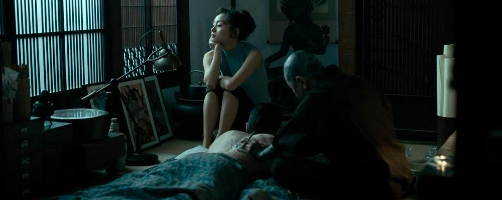
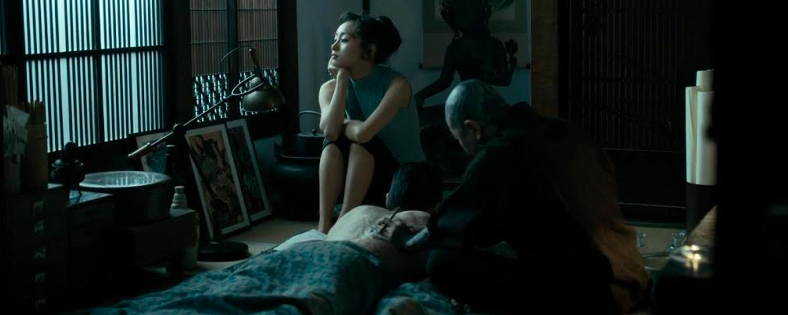

The Outsider
The movie begins with Nick, the main character in a Japanese prison. Nick was a former GI. He served in the US military in WWII. As he is cleaning the prison he comes across Kiyoshi, a Yakuza member who he saves, who later helped him escape. Nick becomes a part of the family of Kiyoshi, Shiromatsu, which he serves loyally until the father (the boss) of the family is killed due to internal and external conflicts. At the end Nick ends up becoming the new boss of the family while it is still at war with a rival family.
 

During the movie Nick changes a lot. At first he is just a guy who is simply trying to survive in a prison where he cannot speak the language of neither the inmates nor the guards, and where no one likes him due to his nationality and him being white (as everyone else in the prison is Japanese). After he escapes and even before he actually joins the Shiromatsu family, he gets involved with Kiyoshi’s sister, and even after becoming Yakuza and joining the family he still is involved with her, even though it is against the rules. After a failed assassination attempt on the family boss, Kiyoshi gets killed and Nick completely changes as a person. He still remains stoic but he is more emotional and in a way, revengeful. He kills the man who betrayed the Shiromatsu and when he gets back to his girl (who is being kept safe before he returns by the remaining loyal members of the Shiromatsu) the remaining men bow to him, seeing him as the new leader.